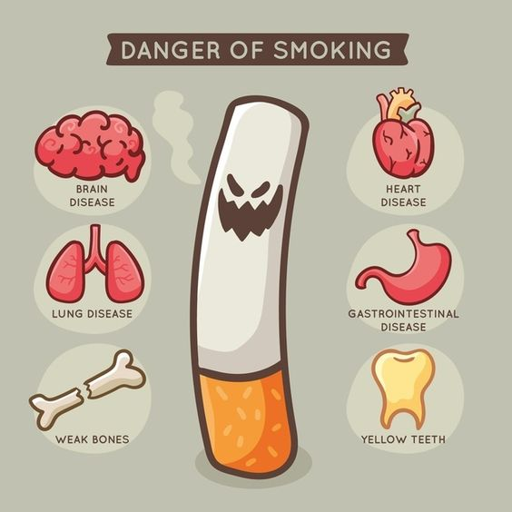

Health Effects of Smoking

Smoking has been proven to have numerous detrimental effects on human health. Such as:
"Brain Disease" , "Lung Disease" , "Weaken Bones" , "Heart Disease" , "Gastrointestinal
disease" , "Yellow Teeth" , etc.
Below are some of the most common health issue faced by smokers.
Lung Cancer:
Smoking is the leading cause of lung cancer. It damages the cells in the lungs and
increases
the risk of developing this deadly disease. The majority of lung cancer cases are
directly
attributed to smoking. The risk of having lung cancer increases with the number of
cigarettes smoked each day and the duration of smoking.
Reduced Fertility:
Smoking has negative effects on both male and female fertility.
In women, it can
cause fertility issues, complications during pregnancy, and an increased risk of
miscarriage and
preterm birth.
In men, smoking can affect sperm quality and reduce fertility.
Reason being, Smoking can negatively affect hormone production. Exposure to tobacco
smoke can harm the reproductive system as smoking can damage the DNA in people.
chronic obstructive
pulmonary disease (COPD):
The chemicals in cigarette smoke weaken your lungs' defense against infections,
narrow air passages, cause swelling in air tubes and destroy air sacs-all
contributing factors for COPD.
Symptoms of COPD include: "intense coughing" , "shortness of breath" , "whistling
sound when you breathe" and "tightness in the chest area".
Hearing and Vision Loss:
Smokers are 70% more likely than nonsmokers to develop vision and hearing loss.
Smokers are 2 times as likely to develop cataracts, a clouding of the eye's internal
lens, and a leading cause of blindness; the more someone smokes, the higher the
chances for cataracts and the earlier in life they are likely to develop.
Smoking causes inflammation that could impede blood flow to the cochlea, part of the
inner ear critical to hearing. In time, this will make it harder to hear
high-pitched sounds
Various forms of smoking
Quitting smoking is a challenging but worthwhile endeavor. It involves breaking free
from
nicotine
addiction and adopting healthier lifestyle choices. There are various strategies and
resources
available to support individuals in their journey towards quitting smoking.